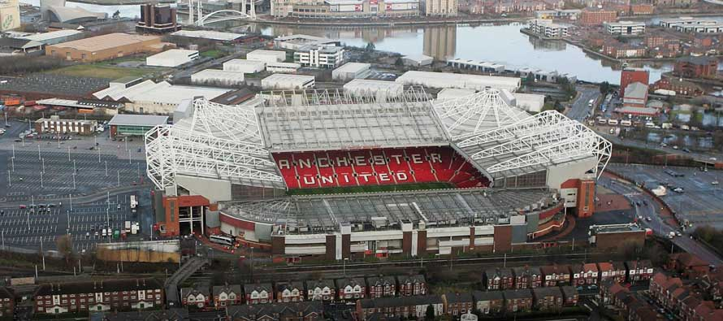

Manchester United Fanpage Manchester United Fanpage
Manchester United Fanpage
Old Trafford Theatre of Dreams
Sir Matt Busby Way Old Trafford
M16 0RA Manchester
England

Every Manchester United fan when given the Chance to come to old
Trafford Would take up the opportunity of going to their first game
which is magical no matter the result,
whether we get a Ronaldo Hat-Trick .
or a Manchester United Disasterclass.. you were still there.. you experienced
the history of Manchester United.